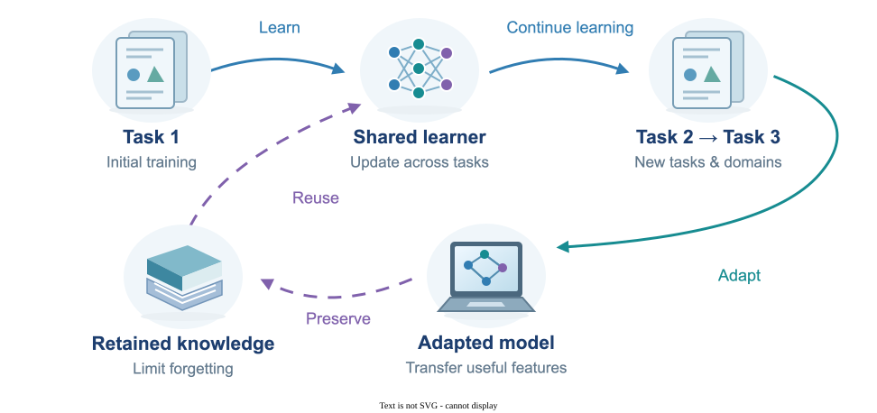

Continual & Transfer Learning
Continual learning helps a model learn new tasks while retaining what it learned before, and transfer learning reuses knowledge from one task to improve another. Both approaches ask when previous experience helps and when it causes interference. My work studies forgetting, rehearsal, source selection, and the generalization of transfer and meta-learning models.
System Diagram

My publications on this area
Peer-Reviewed Conference Papers
-
Junze Deng, Qinhang Wu, Peizhong Ju, Sen Lin, Yingbin Liang, and Ness Shroff,
"Unlocking the Power of Rehearsal in Continual Learning: A Theoretical Perspective,"
42nd International Conference on Machine Learning (ICML'25).
arXiv version
ICML
@inproceedings{deng2025unlocking, title={Unlocking the Power of Rehearsal in Continual Learning: A Theoretical Perspective}, author={Deng, Junze and Wu, Qinhang and Ju, Peizhong and Lin, Sen and Liang, Yingbin and Shroff, Ness}, booktitle={International Conference on Machine Learning}, year={2025}, organization={PMLR} } -
Sen Lin, Peizhong Ju (co-first author), Yingbin Liang, and Ness B. Shroff, "Theory
on Forgetting and Generalization of Continual Learning," 40th International
Conference on Machine Learning (ICML'23), 2023.
arXiv version
ICML
@inproceedings{lin2023theory, title={Theory on forgetting and generalization of continual learning}, author={Lin, Sen and Ju, Peizhong and Liang, Yingbin and Shroff, Ness}, booktitle={International Conference on Machine Learning}, pages={21078--21100}, year={2023}, organization={PMLR} } -
Peizhong Ju, Yingbin Liang, and Ness B. Shroff, "Theoretical Characterization of
the Generalization Performance of Overfitted Meta-Learning," 11th
International Conference on Learning Representations (ICLR'23), 2023.
arXiv version
ICLR
@inproceedings{jutheoretical, title={Theoretical Characterization of the Generalization Performance of Overfitted Meta-Learning}, author={Ju, Peizhong and Liang, Yingbin and Shroff, Ness}, booktitle={The Eleventh International Conference on Learning Representations}, year={2023}, url={https://openreview.net/forum?id=Jifob4dSh99} }
Pending Papers
-
Peizhong Ju, Sen Lin, Mark S. Squillante, Yingbin Liang, and Ness B. Shroff,
"Generalization Performance of Transfer Learning: Overparameterized and Underparameterized Regimes."
arXiv version
@article{ju2023generalization, title={Generalization performance of transfer learning: Overparameterized and underparameterized regimes}, author={Ju, Peizhong and Lin, Sen and Squillante, Mark S and Liang, Yingbin and Shroff, Ness B}, journal={arXiv preprint arXiv:2306.04901}, year={2023} } -
Ashutosh Soni, Peizhong Ju, Atilla Eryilmaz, Ness B. Shroff,
"BeST -- A Novel Source Selection Metric for Transfer Learning."
arXiv version
@article{soni2025best, title={BeST--A Novel Source Selection Metric for Transfer Learning}, author={Soni, Ashutosh and Ju, Peizhong and Eryilmaz, Atilla and Shroff, Ness B}, journal={arXiv preprint arXiv:2501.10933}, year={2025} }
Explore Machine Learning
- Reinforcement Learning
- Federated Learning
- Continual & Transfer Learning
- Diffusion & Flow Matching
- Interpretability & Generalization